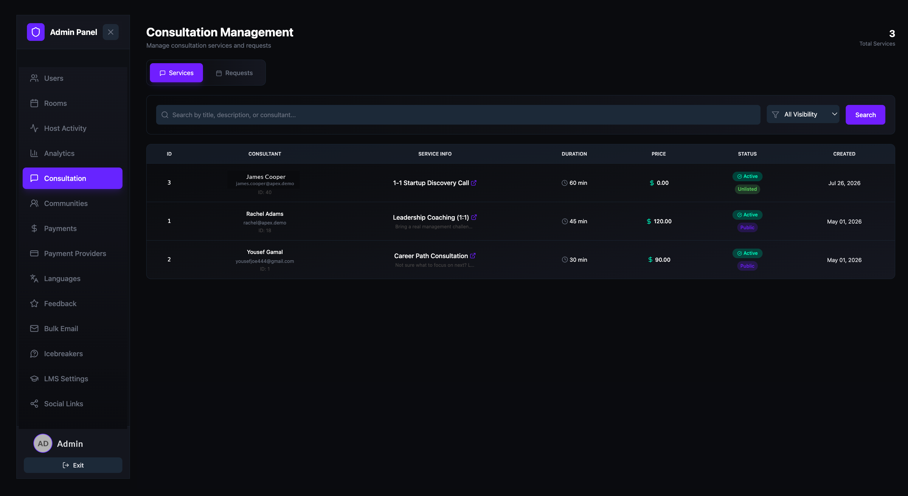
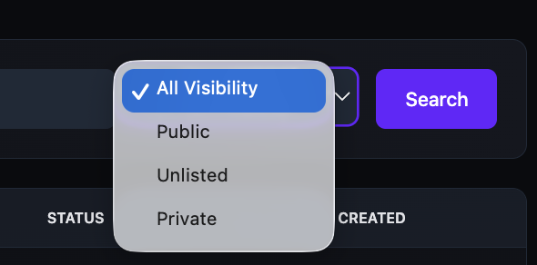
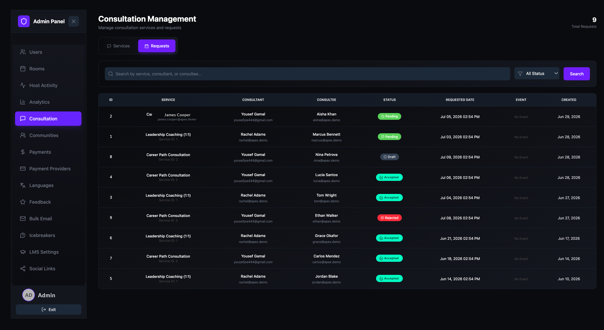
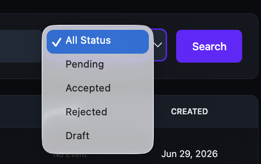

Manage consultation settings
View and monitor all consultation services and booking requests on your platform. Use the Consultation page to review service listings, track request statuses, and filter by visibility or status.
Open the Consultation page
- Open the Admin Panel.
- Click Consultation in the left sidebar.
The Consultation Management page has two tabs: Services and Requests. The total count for the active tab is displayed in the top-right corner.
View consultation services
The Services tab lists all consultation services created by users on the platform. Each row shows:
| Column | Description |
|---|---|
| ID | The unique service ID. |
| Consultant | The consultant's name, email, and user ID. |
| Service Info | The service title and description preview. Click the external link icon to open the service page in a new tab. |
| Duration | The session length in minutes. |
| Price | The consultation fee in USD. Free services show $0.00. |
| Status | Active (green) means the service is live. The visibility label below shows whether the service is Public, Unlisted, or Private. |
| Created | The date the service was created. |

Filter services by visibility
- On the Services tab, click the All Visibility dropdown and select one:
- All Visibility — shows every service regardless of visibility.
- Public — shows only services visible to everyone.
- Unlisted — shows only services accessible via direct link.
- Private — shows only services hidden from public view.
- Type a title, description, or consultant name into the search bar to narrow results further.
- Click Search to apply the filters.

View consultation requests
Click the Requests tab to view all booking requests submitted by users. Each row shows:
| Column | Description |
|---|---|
| ID | The unique request ID. |
| Service | The consultation service name and Service ID. |
| Consultant | The consultant's name and email. |
| Consultee | The person who requested the consultation, with their name and email. |
| Status | The request status: Pending (yellow) awaiting response, Accepted (green) confirmed, Rejected (red) declined, or Draft (grey) not yet submitted. |
| Requested Date | The date and time the consultee proposed for the session. |
| Event | The linked event, if one has been created for the session. Shows "No Event" when a session hasn't been scheduled yet. |
| Created | The date the request was submitted. |

Filter requests by status
- On the Requests tab, click the All Status dropdown and select one:
- All Status — shows every request regardless of status.
- Pending — shows only requests awaiting a response.
- Accepted — shows only confirmed requests.
- Rejected — shows only declined requests.
- Draft — shows only requests not yet submitted.
- Type a service name, consultant, or consultee into the search bar to narrow results further.
- Click Search to apply the filters.
